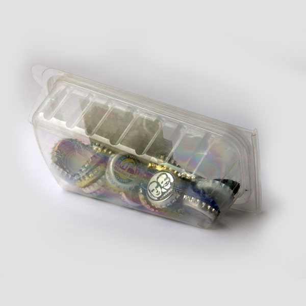

Cap Rattle
Age: 1-2 Location: Indoor, Outdoor Set-up: Planned
Materials:
- Bottle caps
- Plastic or glass container with a lid
Set-up:
Like all rattles, this is a very simple toy for babies 6 to 18 months old that will keep them entretained for a little bit in a fast and easy way. Simply collect all the bottle caps you have and put them in a container with a lid or a tight seal. It is important that the container does not open easily to avoid any dangerous situations.
Play:
Shake the rattle for the baby and then put it on a flat surface or hand it to him or her for a fun and stimulating noise encounter!